Hiking App Redesign
Redesigning a hiking app to be more accessible so users can plan and follow trails with confidence.
Back to all work
- Role
- Solo Project
- Timeline
- Sep–Dec 2025
- Tools
- Protopie
Figma - Methods
- User Research
Accessible Design
Prototyping
UI/UX
The challenge
Problem
The ‘Hiking Project’ app contains a selection of hikes from all around the world. Users can download the area of interest (ex. Ontario, Ecuador), and then use the map feature to search for trails in that area. They are also able to create an account to save the hike and write notes about their experience. After applying Microsoft’s Inclusive Design methodology, it became apparent this app had multiple exclusionary features.
The User Experience
For this project, I decided to focus on two specific scenarios that would make this app especially difficult to navigate and redesign it to make it more accessible. The disabilities were framed as situational, temporary and permanent. The two scenarios chosen were people who:
-
Only had access to one hand
Permanent: one arm. Temporary: an arm injury. Situational: holding a hiking pole or a dog leash.
-
Had a severe visual impairment
Permanent: blindness or low vision. Temporary: an eye injury or cataracts. Situational: bright sunlight on the trail.
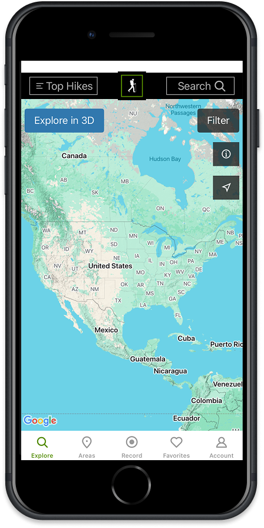
01 / 03
Light font weight against a dark background
- The issue
- Font colour and background pass the WCAG contrast requirements, but the text and borders are thin, which can make them difficult to read for people with a visual impairment.
- The solution
- Make colours brighter and font weights bolder so items are more legible, and let users switch between light and dark mode.
02 / 03
Option buttons too high up on the screen
- The issue
- Studies show the bottom 1/3 of the phone screen is the easiest to access for users of all ages who are using either right or left hand. Buttons at the top of the screen require the user to adjust the way they hold the phone, disrupting user flow. However, as most users are right-handed, having buttons on the upper right side does not cause as many issues for users.
- The solution
- Buttons at the top should be relocated to the bottom half of the phone or reconfigured in the bottom nav menu for functional purposes.
03 / 03
Small text under icons
- The issue
- The labels under the navigation icons are smaller than 16px, which makes them hard to read for people with a visual impairment. Grey text on white background has a contrast ratio of 2.86:1 and does not meet W3C standards.
- The solution
- Increase the text size and create more visual contrast between icons, text, and background.
Hover over each to see the issue
Solution
Redesigning the app with improved colour contrast, larger text options, and improved button placement.
-
Higher contrast
Higher contrast between UI elements confirmed with W3C's accessibility guidelines.
-
Larger text
Text is larger in nav and content areas with strong contrast between elements and background.
-
Reachable buttons
Buttons and search bar added so that users can navigate the map, instead of needing to move to another page.
Discover
As I wasn't very familiar with accessibility guidelines for mobile apps, I started the process with research: what was the best way to place UI elements on a mobile screen? How big should text and icons be? What were the most common accessibility standards?
How Might We
Before starting the research process, I used a 'How Might We' question to guide my investigation and final design.
How might we allow individuals with only one hand and/or severe visual impairment feel confident in navigating the various features in the hiking app such as searching for new hiking spots in their location and favouriting the hike for next time?
Independent Research
I started by reviewing academic literature on mobile accessibility and user experience design. I also read the World Wide Web Consortium (W3C) and Web Content Accessibility Guidelines (WCAG) to familiarize myself with the current design standards.
Insights
After conducting my research, I identified several key insights that would help inform the new design of the hiking app.
-
Phone/hand positioning
Approximately 90% of people around the world are right-handed, which means most devices are designed for right-handed users. If a person is unable to use their right hand, they may struggle with certain app features.
-
Increased smartphone use
A growing number of visually impaired and blind people are using a smartphone for performing their daily life activities.
-
Embedded accessibility functions
Many functions for people with visual impairments have been embedded within the phone’s software and are not always app-dependent.
Competitive analysis
I compared the Hiking Project app with four other map and navigation apps to see how each one handles accessibility for people with low vision or limited hand use.
-
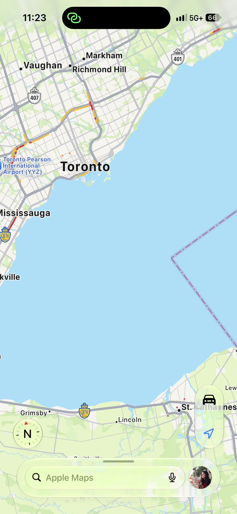
Competitor 1 of 4
Apple Maps
Default navigation app for all Apple devices
-
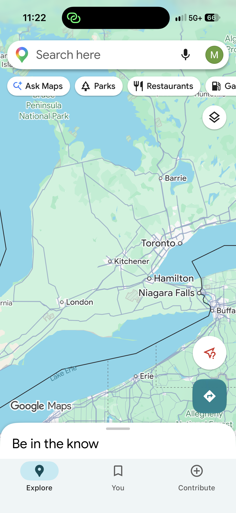
Competitor 2 of 4
Google Maps
Listed at #1 in the App Store
-
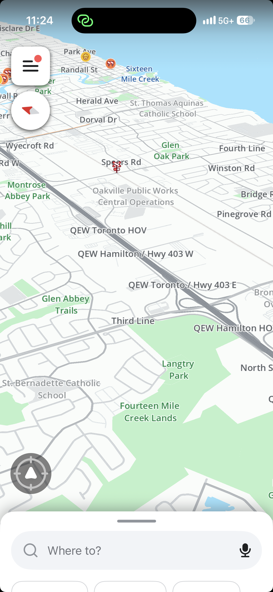
Competitor 3 of 4
Waze
Listed at #4 in the App Store
-
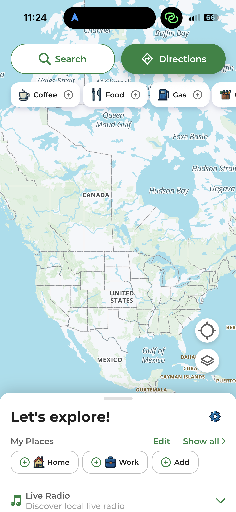
Competitor 4 of 4
MapQuest
Listed at #37 in the App Store
Swipe to compare →
All five side by side
| Feature | Hiking Project | Apple Maps | Google Maps | Waze | MapQuest |
|---|---|---|---|---|---|
| Colour contrast | Partly | No | Partly | Partly | Yes |
| Text size | Partly | Partly | Partly | Partly | Yes |
| Buttons within thumb reach | Partly | Yes | Partly | Partly | Partly |
Takeaway: Most navigation apps were doing one or two things really well, but required improvement in mostly all the same areas. I also realized that the accessibility features embedded in the phone's system could be utilized to improve the experience for some users (e.g. speech-to-text feature, increasing text size).
Define
I focused on the two changes that would help most: stronger colour contrast for people with low vision, and better-placed buttons for people using one hand.
User journey map
Based on my research, I created a journey map for someone using the app with low vision or one hand, which illuminated where a person would experience pain points and successes. Through this exercise, I was able to easily identify specific areas for improvement.
Develop
With my research in mind, I narrowed in on the specific design changes the app needed and conducted user testing with paper prototypes.
Paper prototypes
I then built a low-fidelity paper prototype and tested it with users. Paper could only show how the app works one-handed, so for the vision-related changes I relied on my earlier research.
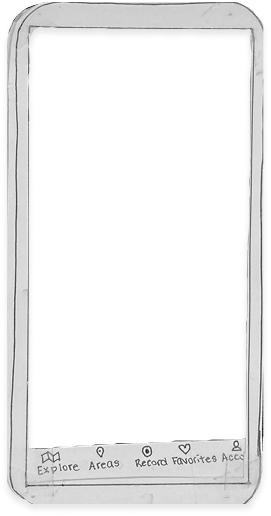
Icon changes
Explore icon changed from a magnifying glass to reduce user confusion. ‘Explore’ takes the user to the list of places, while ‘Search’ takes them to the search bar.
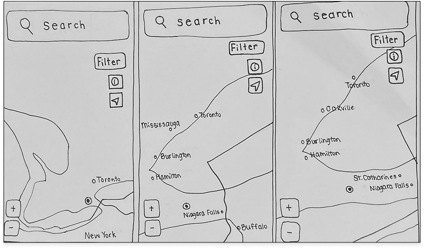
Search bar
Search bar extending along top of phone and enlarged for ease of use.
Zooming function
‘+’ and ‘-’ buttons added to bottom left of screen as this is easier for users to access than bottom right. Allows users to zoom in and out more easily if one-handed.
Button placement
‘Filter’, ‘information’ and ‘arrow’ buttons left at top right as this is easier for users to reach. 4/5 users were able to find ‘Filter’ button easily.
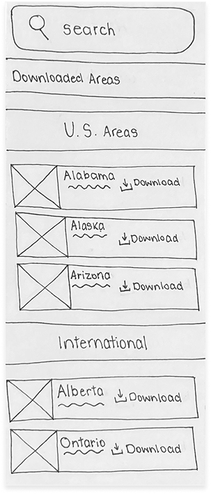
Search bar
‘Search’ bar remains up top so users can quickly find desired location.
Enlarge buttons
Download button made bigger so users can see it better.
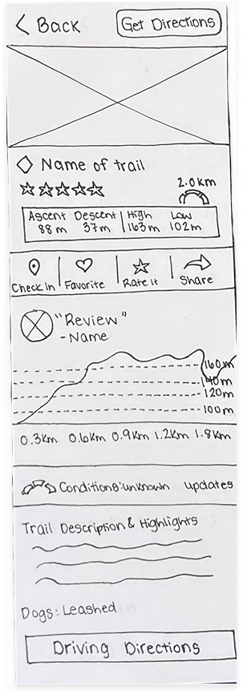
Button placement
‘Get Directions’ button added to top as well as bottom of page for quick access
Hover over each to read the notes
Style guide
After reviewing the results from my user research and user testing, I created a style guide to guide the design process.
As many of the colours passed WCAG 2.1 AA accessibility standards, I was able to use them throughout the design. I did change placement of buttons, enlarged font, and created more contrast between colours.
Surface colours
Applied to backgrounds and containers to create clarity and hierarchy.
- Off-white #FFFEFE
- Dark charcoal #010101
Primary colours
Used to define the brand’s core identity and for main actions throughout the interface.
- Leaf green #598F00
- Cool blue #3178AE
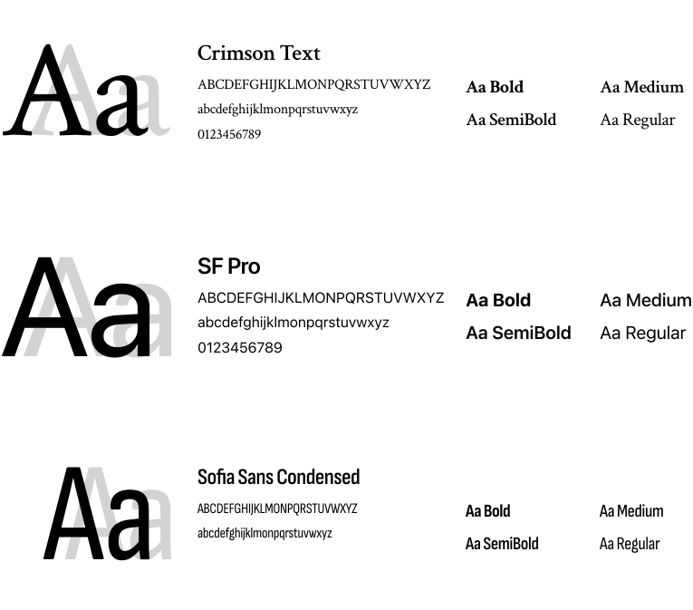
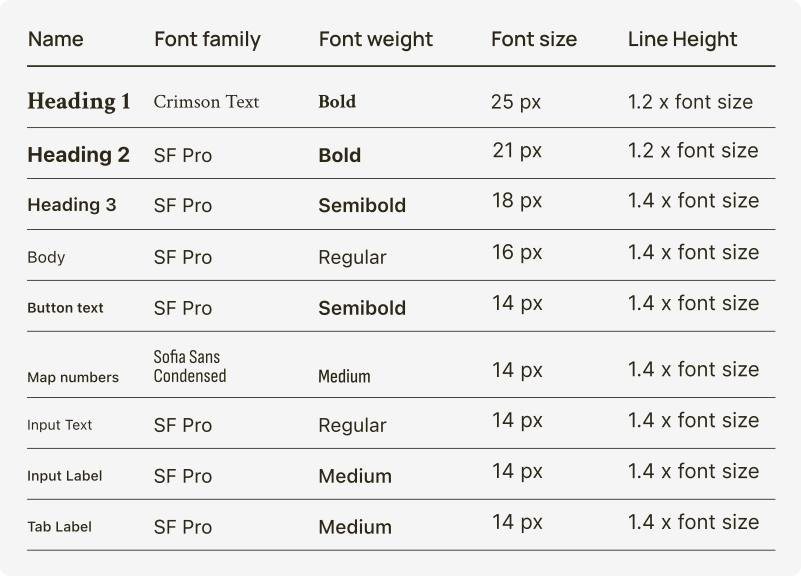
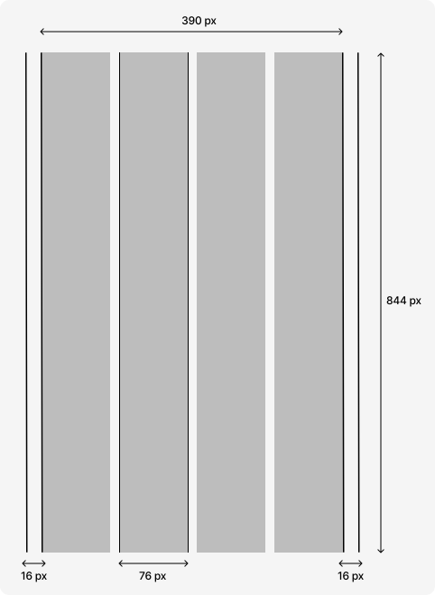
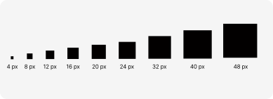
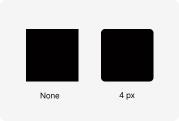
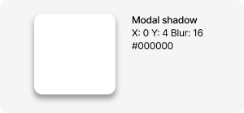
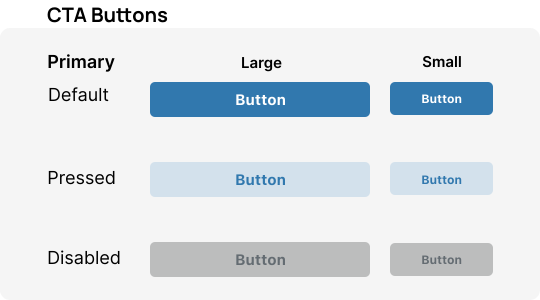
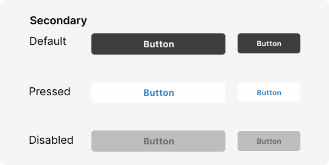
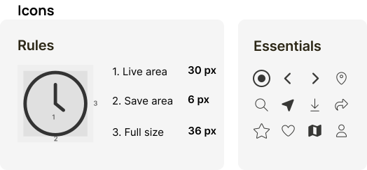
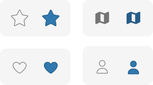
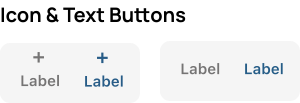
Deliver
The final design addresses the key issues identified in the research and testing phases, and was created as a prototype in Protopie.
Solution
Certain buttons are larger and contrast between colours is improved. Buttons have also been added, such as the large search bar across the top of the screen and the zoom in and out feature.
Reflection
What I learned from this experience.
User testing is everything
This project helped me better understand standards and guidelines for accessible design. However, the limited availability of users made it challenging for me to gather sufficient feedback about the changes I made. Even though my modifications were based in academic research, taking into account the feedback from real people's experiences would have provided a more comprehensive understanding of the design's effectiveness.
What is accessibility?
When I started this project, my focus was solely on physical disabilities. However, this project taught me to explore and consider how the information around us affects our cognitive and sensory abilities. I've often been overwhelmed by technology myself, and have had to help others navigate complex information in the hospital setting. This project has ingrained in me the importance of considering these diverse needs of all users when designing (digital) experiences.